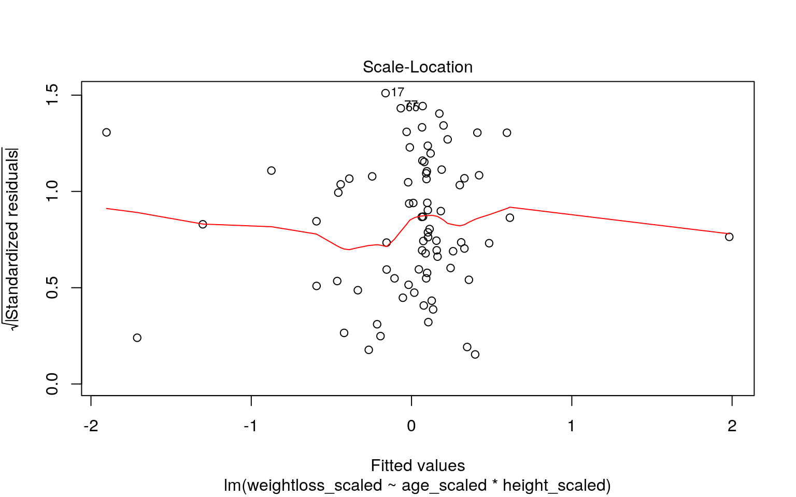

January 1, 2022
Intro
This study is a look at weight loss three different types of diets. The efficiancy of each diet was measured in response to the total weight loss of each person, which is their starting weight minus their weight at 6 weeks post starting the diet. We see one binary value corresponding to either male or female, 0 and 1 respectively. Their height is measured in centimeters. There are 3 diet types, 1,2,and 3. They also recorded age for each person. In total there are 76 observations and 7 variables.
Significance Tests
library(readr)
diet <- read_csv("stcp-Rdataset-Diet.csv")
diet$weight.loss<-diet$pre.weight - diet$weight6weeks
man1<-manova(cbind(weight.loss,Age,pre.weight,Height)~Diet, data=diet)
summary(man1)## Df Pillai approx F num Df den Df Pr(>F)
## Diet 1 0.11027 2.2618 4 73 0.07064 .
## Residuals 76
## ---
## Signif. codes: 0 '***' 0.001 '**' 0.01 '*' 0.05 '.' 0.1
' ' 1summary.aov(man1)## Response weight.loss :
## Df Sum Sq Mean Sq F value Pr(>F)
## Diet 1 45.78 45.781 7.6387 0.007164 **
## Residuals 76 455.49 5.993
## ---
## Signif. codes: 0 '***' 0.001 '**' 0.01 '*' 0.05 '.' 0.1
' ' 1
##
## Response Age :
## Df Sum Sq Mean Sq F value Pr(>F)
## Diet 1 121.0 120.984 1.26 0.2652
## Residuals 76 7297.2 96.015
##
## Response pre.weight :
## Df Sum Sq Mean Sq F value Pr(>F)
## Diet 1 9.0 9.019 0.1172 0.7331
## Residuals 76 5850.4 76.979
##
## Response Height :
## Df Sum Sq Mean Sq F value Pr(>F)
## Diet 1 136.9 136.90 1.0776 0.3025
## Residuals 76 9654.6 127.03diet%>%group_by(Diet)%>%summarize(mean(weight.loss))## # A tibble: 3 x 2
## Diet `mean(weight.loss)`
## <dbl> <dbl>
## 1 1 3.3
## 2 2 3.03
## 3 3 5.15pairwise.t.test(diet$weight.loss,diet$Diet, p.adj="none")##
## Pairwise comparisons using t tests with pooled SD
##
## data: diet$weight.loss and diet$Diet
##
## 1 2
## 2 0.6845 -
## 3 0.0075 0.0017
##
## P value adjustment method: noneIn total we performed 8 tests, 1 manova,4 anova, and 3 post hoc t tests . With this in mind we must our probability of at least one Type I error is 1-.95^(8), which is .34 or 34 percent. So we will set out alpha to .05/8, which is .0063. We perfomed a multivariate manova see if there was a relationship between diet type (1,2,3) and 5 dependent numerical variables (weight.loss,Age,gender,pre.weight,Height). The F statistic was not significant, however, I proceeded to do a follow-up univariate anovas, which showed that the relationship between diet and weight loss were significant ,with a statistic of .006.Post hoc analysis was performed conducting pairwise comparisons to determine which diets differed in weight.loss amounts. This showed that 3 and 1 differed, and 3 and 2 differed after adjusting for multiple comparisons (bonferroni). The Manova assumptions are as follows : Random samples with independent observations, dependant variables have at least 25 observations, homogeneity of within-group covariance matrices, linear relationships among DVs, no extreme univariate or multivariate outliers, no multicollinearity. All asumptions are likely to have been met, exept for no multicollinearity, because bodily numbers do not vary drastically.
Randomization Test
#Our null hypotheis that there was no association between amount of weight loss and Diet 3 or 2, and our alternate was that there is an association between amount of weight loss and Diet 3 or 2. I chose to do just these two diets due to their post hoc signifciance, and due to the fact that diet 1 is under our amount of 25 observations.
diet%>%group_by(Diet)%>%summarize(mean=mean(weight.loss))## # A tibble: 3 x 2
## Diet mean
## <dbl> <dbl>
## 1 1 3.3
## 2 2 3.03
## 3 3 5.15diet%>%group_by(Diet)%>%summarize(s=sd(weight.loss))## # A tibble: 3 x 2
## Diet s
## <dbl> <dbl>
## 1 1 2.24
## 2 2 2.52
## 3 3 2.40diet%>%group_by(Diet)%>%summarize(n())## # A tibble: 3 x 2
## Diet `n()`
## <dbl> <int>
## 1 1 24
## 2 2 27
## 3 3 27df_two <- data.frame(loss = rnorm(25, mean=3.268000 , sd=2.464535),Diet = "2")
df_three <- data.frame(loss = rnorm(27, mean=5.148148, sd=2.395568 ),Diet="3")
df_weight_loss <- rbind(df_two, df_three)
ggplot(df_weight_loss, aes(x = loss, fill = Diet)) + ylab("Count") + xlab("Weight Loss") + geom_histogram(bins = 30, colour = "black") +
geom_vline(data = filter(df_weight_loss, Diet == "2"), aes(xintercept = mean(loss)),size = 1, linetype = "dashed", colour = "green") + geom_vline(data = filter(df_weight_loss, Diet == "3"), aes(xintercept = mean(loss)),size = 1, linetype = "dashed", colour = "blue")+theme_classic()mean_two <- mean(df_two$loss)
mean_three <- mean(df_three$loss)
diff_means_obs <- mean_three - mean_two
t.test(loss ~ Diet, data = df_weight_loss, alternative = "two.sided")##
## Welch Two Sample t-test
##
## data: loss by Diet
## t = -3.8982, df = 48.558, p-value = 0.000297
## alternative hypothesis: true difference in means is not
equal to 0
## 95 percent confidence interval:
## -4.573266 -1.461555
## sample estimates:
## mean in group 2 mean in group 3
## 2.557799 5.575210set.seed(49)
simulated_means <- list()
nreps = 5000
for(i in 1:nreps){
reshuffled <- df_weight_loss
reshuffled$loss <- sample(reshuffled$loss,
size = nrow(reshuffled), replace = FALSE)
mean_diet_2_sim<- mean(reshuffled %>% filter(Diet == "2") %>% pull(loss))
mean_diet_3_sim<- mean(reshuffled %>% filter(Diet == "3") %>% pull(loss))
mean_diff_sim <- mean_diet_3_sim - mean_diet_2_sim
simulated_means[i] <- mean_diff_sim
}
simulated_means <- unlist(simulated_means)
simulated_means[1:10]## [1] 0.95573647 -0.49833031 0.07062388 0.27616359
-0.90648121 0.25392773 -0.52665208 -0.51084717
## [9] -1.38985738 -0.81178937ggplot() + ylab("Count") + xlab("Simulated mean weight loss difference") +
geom_histogram(aes(x = simulated_means), bins = 30,
fill = "grey", alpha = 0.4, colour = "black") +
geom_vline(xintercept = diff_means_obs, size = 1,
linetype = "dashed", colour = "black") +
theme_classic()
abs_simulated_means <- abs(simulated_means)
abs_diff_means_obs <- abs(diff_means_obs)
exceed_count <- length(abs_simulated_means[abs_simulated_means >=
abs_diff_means_obs])
p_val <- exceed_count / nreps
view(p_val)The P-value from the randomization test is 0.07326255555.As we can see, the randomization test provides results that are largely inconsistent with the t-test. This is not surprising since we specifically sampled independent data from non-normal distributions with semi-similar variances. In other words, our sampled data violate at least one of the assumptions of the t-test and in such a case the difference in means is by definition non-analogous to the t statistic used in the t-test. This is an example where randomization tests provide more accurate (or exact) P-values than parametric tests (e.g. small samples from skewed distributions) but even more diverse applications of randomization tests are found in ecology and evolutionary biology, unlike this model.
Linear Regression
center_scale <- function(x) {scale(x, scale = FALSE)}
diet$age_scaled<-center_scale(diet$Age)
diet$weightloss_scaled<-center_scale(diet$weight.loss)
diet$height_scaled<-center_scale(diet$Height)
fit<-lm(weightloss_scaled ~ age_scaled * height_scaled, data=diet)
summary(fit)##
## Call:
## lm(formula = weightloss_scaled ~ age_scaled *
height_scaled,
## data = diet)
##
## Residuals:
## Min 1Q Median 3Q Max
## -5.783 -1.701 -0.085 1.582 5.286
##
## Coefficients:
## Estimate Std. Error t value Pr(>|t|)
## (Intercept) 0.031269 0.290551 0.108 0.915
## age_scaled -0.020978 0.030521 -0.687 0.494
## height_scaled -0.011604 0.028219 -0.411 0.682
## age_scaled:height_scaled -0.003560 0.002902 -1.227 0.224
##
## Residual standard error: 2.556 on 74 degrees of freedom
## Multiple R-squared: 0.03541, Adjusted R-squared:
-0.003693
## F-statistic: 0.9056 on 3 and 74 DF, p-value: 0.4426#The intercept estimate means that when someone has a height and age of 0, they will lose 0.036440 pounds, which is expected since you cant lose much if you dont exist (not sig). The coef estimate for age means that as weight loss increases by one pound, the age decreases by 0.024870 (not sig). The same goes for height, except height decreases by 0.008848 as weight loss increases(not).Slope of age on weight loss for age factor of .003913 less than height(not significant).
library(interactions)
#interact_plot(fit,weightloss_scaled,height_scaled)
ggplot(diet, aes(weightloss_scaled,age_scaled, color = gender)) +geom_smooth(method = "lm", se = F, fullrange = T)+ geom_point()+geom_vline(xintercept=0,lty=2)+geom_vline(xintercept=mean(diet$weightloss_scaled))plot(fit,1)
plot(fit, 3)
plot(fit, 2)library(lmtest)
library(car)
library(sandwich)
coeftest(fit, vcov = vcovHC(fit))[,1:2]## Estimate Std. Error
## (Intercept) 0.03126928 0.298750582
## age_scaled -0.02097818 0.029870458
## height_scaled -0.01160375 0.028090352
## age_scaled:height_scaled -0.00355979 0.003000632#When we fixed robust to violations of homoskedasticity, there were no significant changes in our estimates or our standar error. Since I corrected for normaility earlier, and have just corrected for homoskedasticity, our model must have an issue of linearity, and should use non-linear transformations of the predictors.Our adjusted R-squared is -0.01024, which means our overall model explains 0% of variation in the response variable explained by the overall model.
Bootstrapping
fit<-lm(weightloss_scaled ~ age_scaled*height_scaled, data=diet)
resids<-fit$residuals
fitted<-fit$fitted.values
resid_resamp<-replicate(5000,{
new_resids<-sample(resids,replace=TRUE)
diet$new_y<-fitted+new_resids
fit<-lm(new_y~age_scaled *height_scaled,data=diet)
coef(fit)
})
resid_resamp%>%t%>%as.data.frame%>%summarize_all(sd)## (Intercept) age_scaled height_scaled
age_scaled:height_scaled
## 1 0.2836641 0.02969396 0.02787081 0.002804571#Our intercept standard error has the following numbers - orginal:.288, robust:0.296191891, bootstrapped:0.288387. In all cases none of them are significant, and there is only a .01 flucuation. Our age standard error has the following numbers - orginal:0.030017, robust: 0.029290982, bootstrapped:0.02896615 .In all cases none of them are significant, and there is only a .01 flucuation. Our height standard error has the following numbers - orginal:0.027614, robust:0.027816173, bootstrapped:0.02740836.In all cases none of them are significant, and there is only a .01 flucuation. Logistic Modeling
library(tidyverse)
library(lmtest)
fit3<-glm(gender~Height + pre.weight,data=diet,family=binomial)
summary(fit3)##
## Call:
## glm(formula = gender ~ Height + pre.weight, family =
binomial,
## data = diet)
##
## Deviance Residuals:
## Min 1Q Median 3Q Max
## -2.51852 -0.31321 -0.07863 0.34234 2.25270
##
## Coefficients:
## Estimate Std. Error z value Pr(>|z|)
## (Intercept) -44.69997 10.78914 -4.143 3.43e-05 ***
## Height 0.08002 0.03660 2.187 0.0288 *
## pre.weight 0.42030 0.09960 4.220 2.44e-05 ***
## ---
## Signif. codes: 0 '***' 0.001 '**' 0.01 '*' 0.05 '.' 0.1
' ' 1
##
## (Dispersion parameter for binomial family taken to be 1)
##
## Null deviance: 104.039 on 75 degrees of freedom
## Residual deviance: 40.182 on 73 degrees of freedom
## (2 observations deleted due to missingness)
## AIC: 46.182
##
## Number of Fisher Scoring iterations: 6exp(coef(fit3))## (Intercept) Height pre.weight
## 3.864094e-20 1.083314e+00 1.522415e+00#Controlling for pre.weight, the larger a persons weight was to start of with, the moree likely they were a male. Controlling for starting weight, the taller a person was, the more likely they were a male. Both are significant.Controlling for starting weight, for every one additional inch , odds of being a male increase by a factor of 1.083314 (significant). Controlling for height, for every one additional pound , odds of being a male increase by a factor of 1.522415 (significant).Odds of being a male when weight and height are zero is 3.864094e-20.
class_diag<-function(probs,truth){
if(is.numeric(truth)==FALSE & is.logical(truth)==FALSE) truth<-as.numeric(truth)-1
prediction<-ifelse(probs>.5,1,0)
acc=mean(truth==prediction)
sens=mean(prediction[truth==1]==1)
spec=mean(prediction[truth==0]==0)
ppv=mean(truth[prediction==1]==1)
f1=2*(sens*ppv)/(sens+ppv)
#CALCULATE EXACT AUC
ord<-order(probs, decreasing=TRUE)
probs <- probs[ord]; truth <- truth[ord]
TPR=cumsum(truth)/max(1,sum(truth))
FPR=cumsum(!truth)/max(1,sum(!truth))
dup<-c(probs[-1]>=probs[-length(probs)], FALSE)
TPR<-c(0,TPR[!dup],1); FPR<-c(0,FPR[!dup],1)
n <- length(TPR)
auc<- sum( ((TPR[-1]+TPR[-n])/2) * (FPR[-1]-FPR[-n]) )
data.frame(acc,sens,spec,ppv,auc)
}
gen<-as.numeric(fit3$y)%>%na.omit()
PROBS<-predict(fit3,type = "response")%>%na.omit
table(predict=as.numeric(PROBS>.5),truth=gen)%>%addmargins## truth
## predict 0 1 Sum
## 0 40 3 43
## 1 3 30 33
## Sum 43 33 76#Accuracy: (40+30)/76 = .921, 92.1% of cases are classified correctly
#Sensitivity: 30/33 = .090, 9% of men are correctly classified
#Specificity: 40/43 = .930, 93% of women are correctly classified
#Precsion: 40/43 = .930, woman who are classified as woman who actually are
#AUC : 0.9556025, easy to predict gender from height and pre weight
library(plotROC)
ROCplot<-ggplot(fit3)+geom_roc(aes(d=fit3$y,m=PROBS), n.cuts=0)
ROCplotcalc_auc(ROCplot)## PANEL group AUC
## 1 1 -1 0.9556025#our very high AUC means that it is easy to predict gender from height and pre weight
#diet%>%ggplot(aes(diet$logit,color=gender,fill=gender))+geom_density(alpha=.4)+theme(legend.position=c(.85,.85))+geom_vline(xintercept=0)+xlab("predictor (logit)")Logistical Modeling Part 2
fit4<-glm(gender ~., data = diet, family = "binomial")
summary(fit4)##
## Call:
## glm(formula = gender ~ ., family = "binomial", data =
diet)
##
## Deviance Residuals:
## Min 1Q Median 3Q Max
## -3.514e-05 -2.100e-08 -2.100e-08 2.100e-08 2.882e-05
##
## Coefficients: (4 not defined because of singularities)
## Estimate Std. Error z value Pr(>|z|)
## (Intercept) 4.913e+02 6.121e+05 0.001 0.999
## Person 1.641e+01 1.157e+04 0.001 0.999
## Age 6.888e-01 5.998e+03 0.000 1.000
## Height 1.562e-01 1.388e+03 0.000 1.000
## pre.weight -7.623e+00 1.304e+04 -0.001 1.000
## Diet -4.220e+02 3.011e+05 -0.001 0.999
## weight6weeks 2.762e+00 1.093e+04 0.000 1.000
## weight.loss NA NA NA NA
## age_scaled NA NA NA NA
## weightloss_scaled NA NA NA NA
## height_scaled NA NA NA NA
##
## (Dispersion parameter for binomial family taken to be 1)
##
## Null deviance: 1.0404e+02 on 75 degrees of freedom
## Residual deviance: 3.7770e-09 on 69 degrees of freedom
## (2 observations deleted due to missingness)
## AIC: 14
##
## Number of Fisher Scoring iterations: 25exp(coef(fit4))## (Intercept) Person Age Height pre.weight
## 2.231405e+213 1.340347e+07 1.991313e+00 1.169093e+00
4.889389e-04
## Diet weight6weeks weight.loss age_scaled
weightloss_scaled
## 5.137349e-184 1.582470e+01 NA NA NA
## height_scaled
## NAgen2<-as.numeric(fit4$y)%>%na.omit()
PROBS2<-predict(fit4,type = "response")%>%na.omit
class_diag(PROBS2,gen2)## acc sens spec ppv auc
## 1 1 1 1 1 1library(glmnet)
library(dplyr)
diet2<-diet
#folding part 1
set.seed(1234)
k=10
data <- diet2 %>% sample_frac #put rows of dataset in random order
folds <- ntile(1:nrow(data),n=10) #create fold labels
diags<-NULL
for(i in 1:k){
train <- data[folds!=i,] #create training set (all but fold i)
test <- data[folds==i,] #create test set (just fold i)
truth <- diet2$gender #save truth labels from fold i
fit5 <- glm(gender~(.)^2, data=train, family="binomial")
probs <- predict(fit5, newdata=test, type="response")
diags<-rbind(diags,class_diag(probs,truth))
}
class_diag(probs,truth)## acc sens spec ppv auc
## 1 NA NA NA NA NA#lasso
diet2<-diet
gen3<-as.numeric(fit4$y)%>%na.omit()
yes <- as.matrix(gen3)
xes<-model.matrix(gender~. ,data=diet2)[,-1]
xes<-scale(xes)
cv <- cv.glmnet(xes, yes, family = "binomial")
lasso <- glmnet(xes, yes, family = "binomial", lambda = cv$lamda.1se)
#coef(lasso) #Values that show up are the most predictive variables
#Folding part 2
fit6<-glm(gender ~ Height + pre.weight, data = diet2, family = "binomial")
set.seed(1234)
k=10
data <- diet2 %>% sample_frac #put rows of dataset in random order
folds <- ntile(1:nrow(data),n=10) #create fold labels
diags<-NULL
for(i in 1:k){
train2 <- data[folds!=i,] #create training set (all but fold i)
test2 <- data[folds==i,] #create test set (just fold i)
truth2 <- diet2$gender #save truth labels from fold i
fit7 <- glm(gender~Height + pre.weight, data=train, family="binomial")
probs2 <- predict(fit7, newdata=test2, type="response")
diags2<-rbind(diags,class_diag(probs2,truth2))
}
class_diag(probs2,truth2)## acc sens spec ppv auc
## 1 NA NA NA NA NA